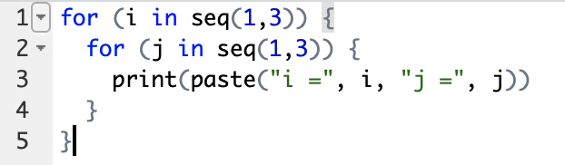

This article will demonstrate another essential structure, for loop and while loop, which can repeatedly execute parts of the code.
For loop will iterate over the elements of a sequence and run the block under the for loop at each iteration.
At the start of each repetition, the next entry of the sequence will be assigned to a dummy loop variable,
that can be referenced in the lines enclosed by the loop. For loop stops when all elements have been gone through.
To implement for loop, we simple write a statement with the form of for ( in )
and use a pair of curly brackets to surround the block to be repeated.
A simple usage to print out consecutive numbers is shown below, with i as the loop variable.
A more complicated example is to sum the entries in a series,
although you can simply use the function sum() instead.
Nested for loops can be utilized to deal with more complicated situations. They behave in a way that the innermost loop is iterated the fastest. It is even possible for the range of an inner loop to depend on an outer loop. When the inner loop finishes all the iteration, the outer loop immediately around it will run once, and then the inner loop is restarted. Two slightly different cases are shown below.

While loop is another kind of loops which will keep repeating the code, given the condition
stated in the loop statement is true. The statement has the form of while ().
Extra care is needed to avoid that the test condition always returns true, otherwise,
it will become an infinite loop and the code will never stop.
A brief example is given below.
Loops and If-then-else statements can be manipulated together to allow more flexibility and control.
Often we also use the command break to interrupt when it is appropriate.
An example is presented below.
Previous: Part 3 - If-then-else Statement
Last Update: 2020-10-17